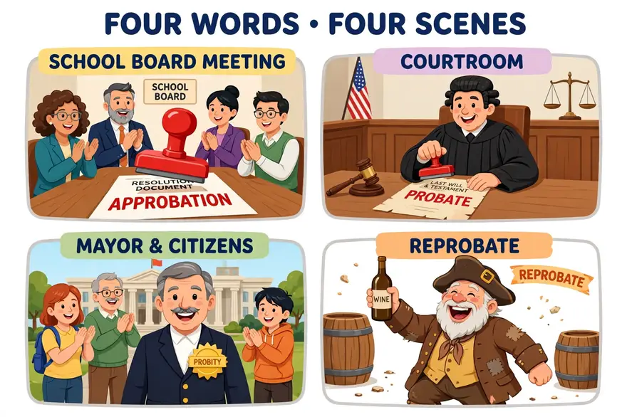
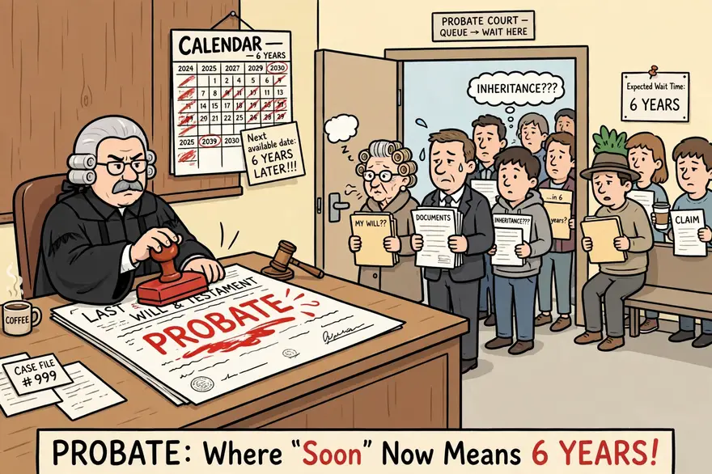
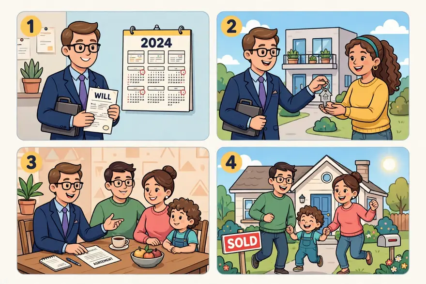
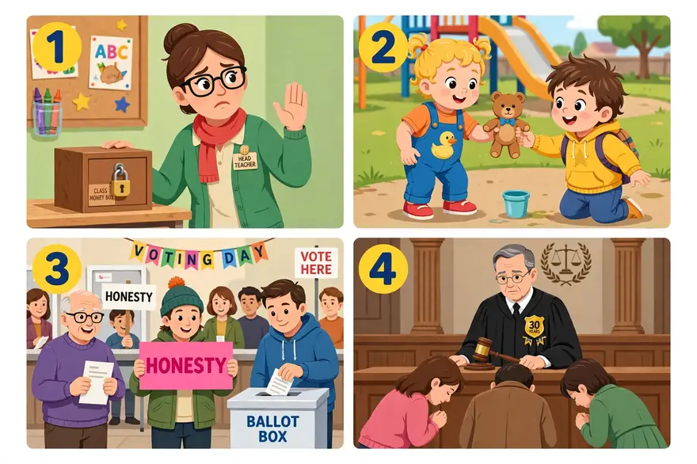
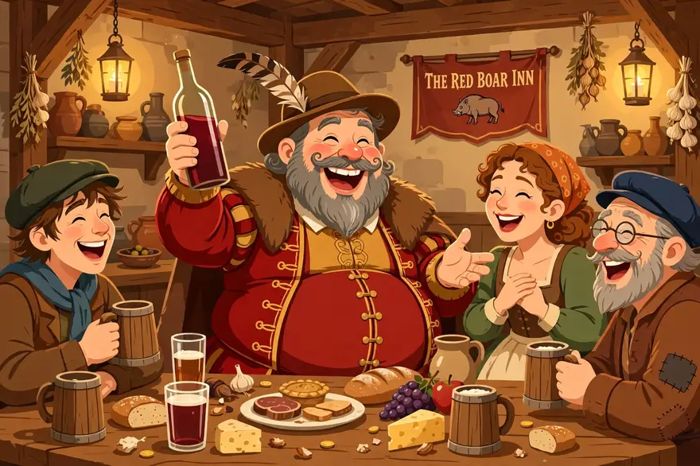
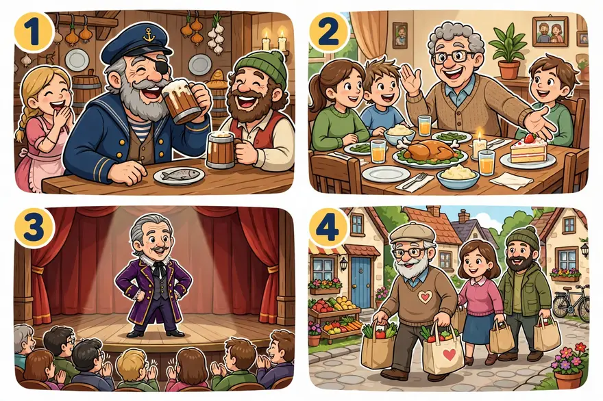
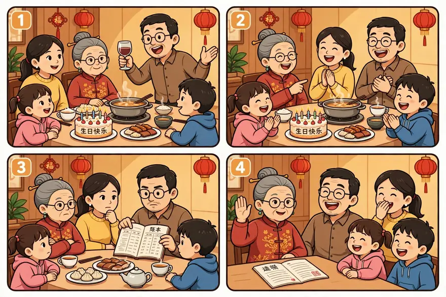

点开单元看词根；带链接的是已上线词根，其余陆续制作中。
词汇课首页 › Unit 1 › PROB
🔊 词根发音：/proʊb/（和 probe「探查」同音——PROB 家族不是「有个问题」，而是「拿去验一验」）
This week, two very different stories shared one word: proof. First, the estate of a famous singer who died without a will finally finished probate after six long years in court — the judge approved the plan, the family shared the money, and the lawyers went home. Second, our city’s oldest head teacher retired yesterday, and the whole school gave him a standing ovation: thirty years without a single complaint, a life of probity that won him the approbation of every parent in town. And in the evening’s film club, we watched Shakespeare’s Falstaff — a lazy, lying, boastful reprobate who drinks everyone else’s wine — and laughed until our stomachs hurt. Proof, it turns out, comes in many forms: a court stamp, a lifetime of honest work, a round of applause, and one very funny drunkard.
本则为自创热点段子：词是真的，事是编的——approbation、probate、probity、reprobate 四个词一个不少，全在里面。其中 Prince 遗产走 probate 六年是真实新闻（歌手 2016 年去世、没留遗嘱，2022 年 7 月底法官批准分配，见 probate 精讲）；老校长退休、电影社看福斯塔夫是编的场景。
PROB comes from the Latin words for “prove or proof” and “honesty or integrity.” A probe, whether it’s a little object for testing electrical circuits or a spacecraft headed for Mars, is basically something that’s looking for evidence or proof. And probable originally described something that wasn’t certain but might be “provable.”
PROB 一家全和「验」有关，但分工清楚：approbation 是验完点头、给正式认可，probate 是验遗嘱真假、再分遗产，probity 是验出来的人品过硬，reprobate 是验了两次都没通过、被退回的人。

在图片中，画面分成四格：左上，校董会会议上，一枚红色大印正盖在写着 APPROBATION 的文件上；右上，法庭里，法官正把 PROBATE 的印章盖在一份遗嘱上；左下，一位面带微笑的市长胸前别着写有 PROBITY 的金色徽章；右下，一位挺着大肚子、举着酒瓶、咧嘴大笑的老酒鬼，旁边写着 REPROBATE。
A formal or official act of approving; praise, usually given with pleasure or enthusiasm.
• The senate signaled its approbation of the new plan by voting for it unanimously.
Approbation is a noun form of approve, but approbation is usually stronger than mere approval. An official commendation for bravery is an example of approbation; getting reelected to office by a wide margin indicates public approbation; and the social approbation received by a star quarterback in high school usually makes all the pain worthwhile.
正式或官方的批准行为；赞许，通常带着欣喜或热情给予的赞扬。
例句：参议院以全票通过新计划的方式，表明了对它的正式认可。
approbation 是 approve 的名词形式，但通常比 mere approval（单纯的赞同）语气更强。一枚表彰勇敢行为的官方嘉奖令，就是 approbation 的一个例子；以大幅优势连任公职，表明赢得了公众的 approbation（正式认可）；而一位高中明星四分卫所获得的社会赞许，通常会让所有的辛苦都值得。
—— 下面是我的讲解 ——
🧠 记忆妙招：拆开看：ad-（朝向）+ probāre（检验、判定好）= 验完货、点头说好。14 世纪它刚进英语时，意思还是「proof（证明）」；到 16 世纪初，才变成「正式、官方的批准」（Merriam-Webster）。记住它的「官方味」：普通 approval 是点头，approbation 是点头＋红头文件。真实用例：奥斯丁《傲慢与偏见》最后一章（第 60 章），伊丽莎白打趣达西——"You were disgusted with the women who were always speaking, and looking, and thinking for your approbation alone."（Project Gutenberg 版《傲慢与偏见》原文）——那些女人一心只想讨达西的认可，而伊丽莎白的魅力恰恰在于她不求 approbation。法律彩蛋：苏格兰法里有个固定说法 approbate and reprobate——同一份遗嘱，你不能既拿好处又去挑战它（印度最高法院 2022 年判决书 Union of India v. N. Murugesan 援引此理）。这条格言正好把本课第 1 词和第 4 词锁在一起。还有一个冷知识：语言学家 Roger Kreuz 在《今日心理学》（2024-02-16）上说，OK 是「表达赞许的万能方式」——最土的 OK 和最正式的 approbation，干的是同一件事（Merriam-Webster Word of the Day, 2024-09-19 转引）。
💡 场合与语境：正式、官方场合的「认可」——校董会、参议院、颁奖词、教会文件里最常见；日常口语说 approval、praise 就够了，对朋友说 "You have my approbation" 会像在颁奖。
🔁 高级替换：写「获得正式认可」用 win / earn / have the approbation of sb；universal approbation（举世赞誉）是新闻里的高级搭配。
⚠️ 注意：别和 probation（试用期、缓刑）混——两者远祖都沾「检验」，但 approbation 是「验完点头」，probation 是「还在验着」。
写作：议论文、新闻评论里写「获得正式认可」，win / earn / have the approbation of sb 是现成句式；universal approbation（举世赞誉）是高级搭配。
✏️ 拼写：ap-pro-ba-tion；-tion 是名词后缀；注意它和 probation（试用期、缓刑）只差一个字母，意思完全不同。
例句：
图片四格与下面 ①②③④ 四个例句一一对应。
① Our head teacher won the approbation of all the parents for her after-school reading club.
我们班主任凭课后阅读社赢得了全体家长的正式认可。
② The young singer earned the approbation of the judges with one song.
这位年轻歌手凭一首歌就赢得了评委们的赞许。
③ The committee gave its approbation to the plan after a long discussion.
委员会经过长时间讨论，正式认可了这项计划。
④ The mayor's speech received warm approbation from the crowd.
市长的演讲赢得了人群热烈的赞许。
The process of proving in court that the will of someone who has died is valid, and of administering the estate of a dead person.
• When her father died, she thought she would be able to avoid probate, but she wasn't that lucky.
Ever since people have written wills, those wills have had to be proven genuine by a judge. Without a probate process, greedy acquaintances or relatives could write up a fake will stating that all the person's wealth belonged to them. To establish a will as genuine, it must generally be witnessed and stamped by someone officially licensed to do so (though wills have sometimes been approved even when they were just written on a piece of scrap paper, with no witnesses). Today we use probate more broadly to mean everything that's handled in probate court, a special court that oversees the handling of estates (the money and property left when someone dies), making sure that everyone eventually receives what is properly theirs.
在法庭上证明已故之人的遗嘱有效、并管理死者遗产的程序。
例句：父亲去世后，她本以为自己能避开遗嘱认证程序，可惜没那么幸运。
自从人们开始立遗嘱，这些遗嘱就必须由法官证明是真实有效的。没有遗嘱认证程序，贪心的熟人或亲戚就可能伪造一份遗嘱，声称死者的全部财产都归他们所有。要确认一份遗嘱真实有效，通常必须由获得官方许可的人见证并盖章（不过，有时遗嘱即使只是写在一张废纸上、没有任何见证人，也会被认可）。今天，我们用 probate 泛指遗嘱认证法庭（probate court）处理的一切事务——这是一家专门的法庭，负责监管遗产（人死后留下的钱财）的处理，确保每个人最终都能拿到本应属于自己的那一份。
—— 下面是我的讲解 ——
🧠 记忆妙招：probate 的核心动作就是词根义——先向法院「证明」遗嘱是真的，才谈得上分钱。词源：中古英语 probat ← 拉丁 probatum「已被证明之物」，名词 15 世纪进入英语（Merriam-Webster 法律词典）。画面：遗产界的「质检车间」——遗嘱是产品，先过检（prove it!），验完是真的才许出厂分配。真实案例：歌手 Prince 2016 年 4 月 21 日去世，没留遗嘱（法律上叫 died intestate），无配偶、无在世子女；40 多人冒出来自称亲属，一名自称其子的囚犯被 DNA 检测排除；明尼苏达州法院最终认定他的 6 位兄弟姐妹为继承人；遗产估值打了六年仗，2022 年 1 月各方同意按 1.564 亿美元计，2022 年 7 月底法官批准分配——从去世到结案整整六年（Entertainment Weekly、美联社等报道）。生前为夺回名字和版权打了一辈子官司的人，因为少写一张纸，身后由法院和税务局说了算——这是 probate 最好的反面教材。制度小知识：美国有专门的 probate court（遗嘱认证法庭），英国则重在拿文件——有遗嘱申请 grant of probate，无遗嘱申请 letters of administration（GOV.UK 流程）。还有一个辨析：problem 看着像亲戚，其实不是——它来自希腊语 problēma「抛到面前的东西」，和 PROB 家族无关；probe 倒是真表亲，源自中世纪拉丁 proba「检查」（Etymonline）。

💡 场合与语境：法律新闻、遗产话题是它的主场；美式 probate 常指整个遗产处理程序，英式常指那张授权书（grant of probate）。
🔁 高级替换：写「走遗嘱认证程序」用 go through probate；写「避开」用 avoid probate；英国语境用 apply for a grant of probate（申请遗嘱认证授权书）。
⚠️ 注意：别一律译成「遗嘱认证」四个字就完事——它在美国是一整套程序，在英国是一张纸；也别把 probate 和 trial（审判）混为一谈，它只是「验遗嘱真假、再分遗产」的那一段。
写作：写遗产、继承话题时，go through probate（走遗嘱认证程序）、avoid probate（避开遗嘱认证）是固定搭配。
✏️ 拼写：prob-ate；词根 PROB（检验、证明）+ -ate；别和 problem 混——problem 来自希腊语，和 PROB 家族没有关系。
例句：

图片四格与下面 ①②③④ 四个例句一一对应。
① My uncle's will took a year in probate before the family could share his old house.
我叔叔的遗嘱在遗嘱认证程序里走了一年，家里人才分到了他的老房子。
② She hired a lawyer to help her avoid probate for her mother's small flat.
她请了一位律师，帮她母亲的小公寓避开遗嘱认证程序。
③ The lawyer explained the probate process to the family in simple words.
律师用简单的话向家里人解释了遗嘱认证的流程。
④ Without a will, the house could not be sold until probate was finished.
没有遗嘱，房子要等遗嘱认证程序走完才能卖。
Absolute honesty and uprightness.
• Her unquestioned probity helped win her the respect of her fellow judges.
Probity is a quality the public generally hopes for in its elected officials but doesn't always get. Bankers, for example, have traditionally been careful to project an air of probity, even though banking scandals and bailouts have made this harder than ever. An aura of probity surrounds such public figures as Warren Buffett and Bill Moyers, men to whom many Americans would entrust their children and their finances.
绝对的诚实与正直。
例句：她无可置疑的正直，帮她赢得了同行法官们的尊敬。
probity 是公众通常希望民选官员具备、却不总能得到的品质。比如银行家们，传统上一直小心翼翼地营造出一种正直廉洁的形象，尽管银行业的丑闻和政府救助让这一点比以往任何时候都更难做到。像沃伦·巴菲特和比尔·莫耶斯这样的公众人物，身上就笼罩着一层正直的光环——许多美国人都愿意把孩子和钱财托付给他们这样的人。
—— 下面是我的讲解 ——
🧠 记忆妙招：四词里唯一不走 probāre 动词线的——它来自拉丁 probitās「正直」，源头是 probus「诚实的」，15 世纪进入英语（Merriam-Webster）。Merriam-Webster 的辨析点明了它的「含金量」：probity 是 tried and proven honesty——「经受住考验、已被证明的诚实」，不是「没撒过谎」，是「验过货的人品」。真实案例：2015 年李光耀葬礼上，前外长 S. Dhanabalan 致悼词说："Mr. Lee demanded and expected honesty and probity from political colleagues... public servants and from all members of his family."（Channel NewsAsia, 2015-03-29 悼词全文）——李光耀要求政治同僚、公务员乃至全家人都做到诚实正直。2022 年新加坡贪污调查局（CPIB）70 周年活动上，哈莉玛总统又引了李光耀的原话：领导人必须对同僚部长和下属坚持同样高标准的 probity（petir.sg, 2022-09-22）。新加坡公务员研习刊物 ETHOS 总结：对公职人员坚持 "a high standard of probity"，同时用有竞争力的薪酬降低贪腐诱惑、要求申报资产与礼物。记住这个画面：probity 不是一句口号，是一个国家几十年如一日「验货」验出来的名声。
💡 场合与语境：新闻、政治、财经报道里夸官员、银行家「廉洁正直」；固定搭配 probity in public life（公共生活中的廉洁）、financial probity（财政廉洁）、a reputation for probity（廉洁的名声）。
🔁 高级替换：写人物品格，a man of utmost probity（极其正直的人）比 a very honest man 高级得多；写「廉洁记录」用 a record of probity。
⚠️ 注意：probity 程度重于 honesty——说某官员 probity 出问题，是指控其廉洁记录整体崩塌，新闻写作中属重词，不可当普通「诚实」乱用；拼写别写成 propriety（得体、礼仪）——probity 管人品，propriety 管举止。
写作：写人物品格、官员廉洁，a reputation for probity、a man of utmost probity 是高级句式；financial probity（财政廉洁）是新闻固定搭配。
✏️ 拼写：prob-i-ty；-ty 是名词后缀（honesty 同款）；千万别写成 propriety（得体、礼仪）——只差一个字母，意思差一整个人设。
例句：

图片四格与下面 ①②③④ 四个例句一一对应。
① Our new head teacher is known for her probity — she never touches the class fund.
我们新来的班主任以正直廉洁著称——她从不动班费一分钱。
② My little one showed real probity today — the lost toy went straight back to its owner.
我家娃今天表现出了真正的正直——捡到的玩具直接还给了它的主人。
③ Voters want leaders with probity, not just fine speeches.
选民想要的是正直廉洁的领导人，而不只是漂亮的演讲。
④ The judge's probity was never questioned in thirty years on the bench.
这位法官在法庭上任职三十年，正直从未受到过质疑。
A person of thoroughly bad character.
• His wife finally left him, claiming he was a reprobate who would disappear for weeks at a time, gambling and drinking away all his money.
The related verb of reprobate is reprove, which originally, as the opposite of approve, meant “to condemn.” Thus, a reprobate, as the word was used in Biblical translations, was someone condemned to hell. But for many years reprobate has been said in a tone of joshing affection, usually to describe someone of doubtful morals but good humor. Shakespeare's great character Falstaff—a lazy, lying, boastful, sponging drunkard—is the model of a reprobate, but still everyone's favorite Shakespeare character.
品行极其败坏的人。
例句：他的妻子终于离开了他，说他是个品行败坏的人，常常一消失就是几个星期，把钱全都赌光、喝光。
与 reprobate 相关的动词是 reprove，它最初作为 approve 的反义词，意思是「谴责」。因此，在《圣经》译本里，reprobate 指的是被判定下地狱的人。不过很多年来，reprobate 常常带着开玩笑的亲昵语气来说，通常用来形容一个道德上不那么靠谱、但幽默风趣的人。莎士比亚笔下的伟大角色福斯塔夫——一个懒惰、撒谎、吹牛、蹭吃蹭喝的酒鬼——就是 reprobate 的典范，但他仍然是大家最喜欢的莎士比亚角色。
—— 下面是我的讲解 ——
🧠 记忆妙招：re-（退回、否定）+ probāre（检验）= 检验后被退回、判定不合格——字面就是「复检没通过、被退货的人」。名词「堕落的人」这个意思 1592 年才见载，动词、形容词 15 世纪就进入英语了（Merriam-Webster）。宗教底色：《圣经》钦定本（KJV）《罗马书》1:28 有名句 "God gave them over to a reprobate mind"（现代译本多作 debased / depraved mind）——在加尔文主义传统里，reprobate 还特指「预定不得救者」，所以 19 世纪小说里这个词常带神学审判味。文学名场面：原书讲解段说的莎士比亚角色福斯塔夫（Falstaff）——懒惰、撒谎、吹牛、蹭吃蹭喝的酒鬼——就是 reprobate 的典范，却仍是大家最喜欢的莎士比亚角色。还有萨克雷《名利场》第 33 章："That is the son of the old reprobate Sir Pitt, who is very likely drinking at the public house at this very moment."（《名利场》在线全文）——一个家族两代 reprobate。词典还官方认证了它的「亲切骂人话」用法：Cambridge Dictionary 给它标 "formal or humorous"，例句 "Every time I see you, you're drunk, you old reprobate!"——英式幽默的精髓：用最狠的「下地狱预定者」去喊最亲的老酒友。注意：这个玩笑只限熟人、只限贪杯好玩这类小节；真指犯罪、家暴者时，它是严肃定性，不是玩笑。

💡 场合与语境：小说、英式幽默、历史剧里最常见；熟人之间开玩笑可以说 "you old reprobate!"，搭配 a lovable reprobate（可爱的浪子）。
🔁 高级替换：写小说人物，scoundrel（无赖）是它的近义词，原书 Quiz 1-3 也把 reprobate / scoundrel 配成一对；但 scoundrel 没有 reprobate 的神学味和英式幽默感。
⚠️ 注意：亲切义有严格条件——只限熟人、玩笑语气、且对方毛病仅限贪杯好玩一类小节；神学语境里它仍是重词（预定沉沦），宗教话题中勿拿它打趣；也别和 reprove（谴责，动词）混用。
写作：写小说人物、历史人物，用 a lovable reprobate（可爱的浪子）立刻有英式幽默味；严肃写作里它是「道德败坏」的重词。
✏️ 拼写：re-prob-ate；re-（否定、退回）+ prob（检验）；名词「堕落的人」这个意思 1592 年才见载，动词、形容词 15 世纪就有了。
例句：

图片四格与下面 ①②③④ 四个例句一一对应。
① The old sailor in the story is a lovable reprobate — he drinks, he brags, and everyone loves him.
故事里的老水手是个可爱的浪子——他喝酒、吹牛，可人人都喜欢他。
② My uncle is a cheerful reprobate at family dinners — he tells tall tales and steals the last piece of cake.
我舅舅是家宴上的开心果式「浪子」——他讲吹牛的故事，还偷走最后一块蛋糕。
③ The old actor played a charming reprobate who stole every scene.
这位老演员演了一个迷人的浪子，抢走了每一场戏的风头。
④ Everyone in the village knew him as a harmless reprobate with a big heart.
村里人都知道他是个心地善良、无伤大雅的浪子。
奶奶八十大寿，家里摆了三桌。饭吃到一半，舅舅站起来敬酒，吹了一通牛——说自己年轻时差点进了国家队，桌上的人都笑翻了，奶奶指着他说：「你呀，就是我们家那个有名的 reprobate，懒是懒了点，心眼可不坏。」这话一出，全桌鼓掌，连平时最严肃的大伯都笑了。大伯是家里的「定海神针」：管了三十年家族账本，一分钱都没差过，亲戚们都说，把钱交给他最放心——这就是 probity，一辈子验出来的好人品。酒过三巡，奶奶宣布：今年的家族基金由大伯管，全体举手，一致通过——这就是我们家的 approbation，比盖章还管用。最后轮到分遗产的老话题：爷爷留下的老房子到底归谁？奶奶摆摆手：「先走 probate，法院验完是真的，再分！谁也别想先动手。」一桌人全笑了——家宴开成了法庭，法官是奶奶。

🌍 英文版：
At Grandma's eightieth birthday dinner, three tables were full. Halfway through the meal, Uncle stood up to make a toast and told a tall tale — how he had almost made the national team in his youth. The whole table burst out laughing, and Grandma pointed at him: "You — you are our family's famous reprobate. Lazy, yes, but with a good heart." Everyone applauded, even our sternest uncle. That uncle is the family's rock: he has kept the family accounts for thirty years without a single penny missing, and everyone says the money is safest with him — that is probity, a good name earned over a lifetime. After a few more rounds, Grandma announced: this year's family fund stays with him, and everyone raised a hand in favour — that is our family's approbation, stronger than any official stamp. Finally came the old question: who gets Grandpa's old house? Grandma waved her hand: "First probate — let the court prove the will is real, and then we share it. Nobody touches anything before that." The whole table laughed — a family dinner had turned into a courtroom, and the judge was Grandma.
| 正式场合的认可、赞许 | approbation 正式认可；赞许 |
| 遗嘱、遗产、法庭程序 | probate 遗嘱认证（程序） |
| 官员、公职人员的廉洁正直 | probity 正直廉洁 |
| 小说人物、英式幽默里的「坏得可爱」 | reprobate 品行败坏的人；浪子 |
1. After a long debate, the city council gave its to the new library project.
2. After his death, his family spent two years in before they could sell the house.
3. The newspaper praised the mayor for his — in twenty years, he had never taken a gift from anyone doing business with the city.
4. The two old friends laughed and called each other as they shared stories over dinner.
5. The will had to be by a judge before anyone could touch the money.
听写（看中文打英文）：
① 正式认可、赞许
② 遗嘱认证（程序）
③ 绝对正直、廉洁
④ 品行败坏的人、堕落者
1. After a long debate, the city council gave its approbation to the new library project.
经过长时间的讨论，市议会正式认可了新建图书馆的项目。
2. After his death, his family spent two years in probate before they could sell the house.
他去世后，家里人花了两年时间走遗嘱认证程序，才得以卖掉房子。
3. The newspaper praised the mayor for his probity — in twenty years, he had never taken a gift from anyone doing business with the city.
报纸称赞市长的正直廉洁——二十年来，他从没收过任何与市政府有生意往来的人送的礼。
4. The two old friends laughed and called each other reprobates as they shared stories over dinner.
两位老朋友边吃饭边讲故事，笑着互称对方是「老顽童」。
5. The will had to be probated by a judge before anyone could touch the money.
遗嘱必须先由法官认证有效，任何人才能动那笔钱。
听写：① approbation（正式认可、赞许） ② probate（遗嘱认证（程序）） ③ probity（绝对正直、廉洁） ④ reprobate（品行败坏的人、堕落者）
和精读一样的卡片：正面只有情景，没有答案。先在脑子里搜出那个词、出声说出完整的句子，再点卡片翻到背面对照。每个词两个情景：情景 1 练提取（第 3 步），情景 2 换了个场景练迁移（第 5 步）；翻到背面后如实点记录，记录保存在这台设备上。
年底总结会上，校长当众念了一位老师的名字，还给她发了一张奖状，全场都鼓掌了。
What did the teacher get at the meeting?
新闻里说，市政府的新预算在议会上全票通过，市长说这是全市的共识。你想说这份预算得到了什么。
What did the budget win at the council meeting?
approbation /ˌæprəˈbeɪʃən/ n. 名词
正式认可、赞许
🎬 场景范句
情景 1：She won the approbation of the whole school.
她赢得了全校的正式赞许。
情景 2：The budget won the approbation of the whole city council.
这份预算赢得了全体市议员的正式认可。
🧭 使用场景
正式、官方场合的「认可」——校董会、参议院、颁奖词、教会文件里最常见；日常口语说 approval、praise 就够了，对朋友说 "You have my approbation" 会像在颁奖。
⚠️ 注意
别和 probation（试用期、缓刑）混——两者远祖都沾「检验」，但 approbation 是「验完点头」，probation 是「还在验着」。
第 3 步 · 提取（情景 1）记录：
第 5 步 · 迁移（情景 2）记录：
注意：这里不是要求你在所有生活场景中强行使用高级词汇，而是让你知道它们在什么情况下才真正适合出现。
第 4 步「表达」：每个词一个开口提示，先别看参考句，出声说一句你自己的真事，再打开参考句对照。
approbation：想想你们年级组评优、校长在会上表扬老师的一次经历，用 approbation 说一句。
Our head teacher won the approbation of the whole school for her reading project.
我们班主任凭阅读项目赢得了全校的正式赞许。
probate：家长群里有人问起「家里老人留了遗嘱，房子该怎么分」，用 probate 说一句。
Even with a will, the family still has to go through probate before they can sell the house.
即使留了遗嘱，家里人也得先走完遗嘱认证程序，才能卖房子。
probity：想想你教过的「拾金不昧」——不管是教学生还是教自家娃，用 probity 说一句。
I told my students about a teacher famous for his probity — he returned a lost wallet with all the money inside.
我给学生们讲了一位以正直著称的老师——他捡到一个钱包，原封不动地还了回去。
reprobate：说说家里一位爱吹牛、爱蹭吃蹭喝的长辈，或者剧里一位「坏得可爱」的角色，用 reprobate 开个玩笑。
In the novel, the innkeeper is a lovable reprobate who cheats at cards but never cheats his friends.
小说里的店主是个可爱的浪子——他打牌会耍赖，可从不坑朋友。